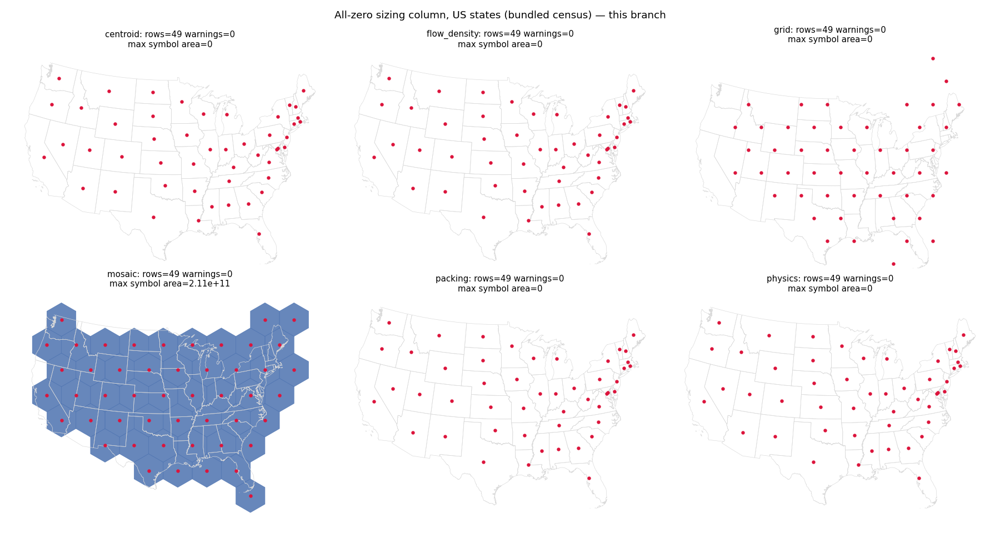

Second commit on PR 41. An all-zero sizing column used to hang the grid layout (zero tile size gives a zero lattice step), crash flow_density with ZeroDivisionError, and warn from centroid, physics and packing. Every layout now returns a well-formed result with all symbols at zero size, row count and index alignment preserved, no exception and no warning. Look for zero-area symbols sitting on their geometry centroids (red dots) in the force-based layouts.
centroid, flow_density, packing and physics are a no-op: every symbol has zero area and sits exactly on its geometry centroid, which is the natural limit of the per-symbol zero behaviour. grid still assigns lattice cells, using the mean geometry area for the cell size in place of the largest symbol (which is zero); its symbols are zero-area, so only the red dots are visible.
mosaic is the exception, and it is unchanged by this commit: a mosaic cartogram gives every region at least one tile whatever its value, so the tiles stay at full size. That was already its behaviour before.
No before figure exists for the whole set: on main the grid layout does not terminate (the lattice step is zero, so tile generation walks the bounds forever and the process is killed on memory), and flow_density raises ZeroDivisionError from the numba density kernel.
Results are bit-identical to the first commit of this PR for inputs with only *some* zero values, and bit-identical to main for inputs with no zero values.

All six layouts on an all-zero Population column. Red dots mark the rendered symbol centroids. Row count 49 and zero RuntimeWarnings everywhere.